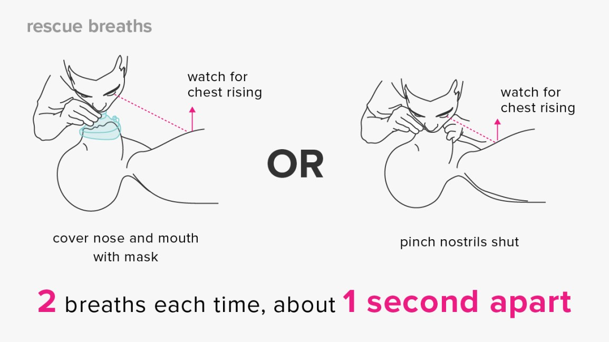
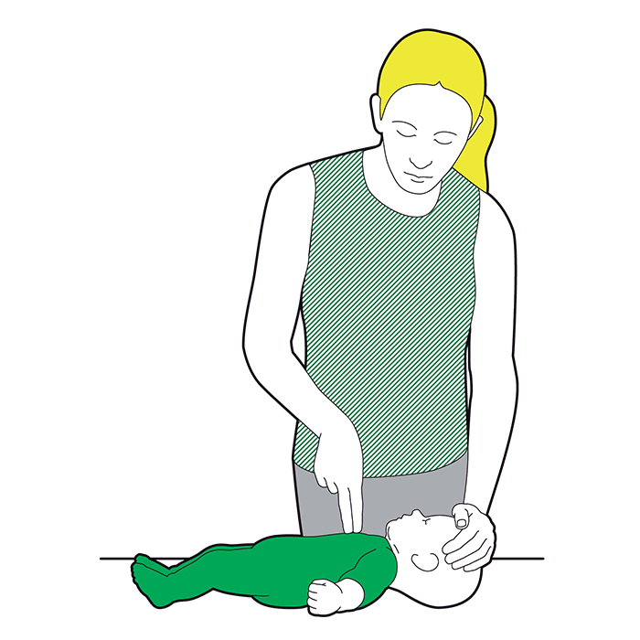

CPR:
Cardiopulmonary Resuscitation or popularly known as CPR – is an emergency lifesaving procedure performed when the heart stops beating. Immediate CPR can double or triple chances of survival after cardiac arrest.
Hands-only CPR
To carry out a chest compression:
- Place the heel of your hand on the breastbone at the centre of the person's chest. Place your other hand on top of your first hand and interlock your fingers.
- Position yourself with your shoulders above your hands.
- Using your body weight (not just your arms), press straight down by 5 to 6cm (2 to 2.5 inches) on their chest.
- Keeping your hands on their chest, release the compression and allow the chest to return to its original position.
- Repeat these compressions at a rate of 100 to 120 times a minute until an ambulance arrives or you become exhausted.

Hands-only CPR
CPR with rescue breaths
If you have been trained in CPR, including rescue breaths, and feel confident using your skills, you should give chest compressions with rescue breaths.
If you're not completely confident, attempt hands-only CPR instead.Adults
- Place the heel of your hand on the breastbone at the centre of the person's chest. Place your other hand on top of your first hand and interlock your fingers
- After every 30 chest compressions, give 2 rescue breaths.
- Tilt the casualty's head gently and lift the chin up with 2 fingers. Pinch the person's nose. Seal your mouth over their mouth, and blow steadily and firmly into their mouth for about 1 second. Check that their chest rises. Give 2 rescue breaths.
- Continue with cycles of 30 chest compressions and 2 rescue breaths until they begin to recover or emergency help arrives.

CPR with rescue breaths
Children over 1 year old
- Open the child's airway by placing 1 hand on their forehead and gently tilting their head back and lifting the chin. Remove any visible obstructions from the mouth and nose.
- Pinch their nose. Seal your mouth over their mouth, and blow steadily and firmly into their mouth, checking that their chest rises. Give 5 initial rescue breaths.
- Place the heel of 1 hand on the centre of their chest and push down by 5cm (about 2 inches), which is approximately one-third of the chest diameter. The quality (depth) of chest compressions is very important. Use 2 hands if you can't achieve a depth of 5cm using 1 hand.
- After every 30 chest compressions at a rate of 100 to 120 a minute, give 2 breaths.
- Continue with cycles of 30 chest compressions and 2 rescue breaths until they begin to recover or emergency help arrives.
Infants under 1 year old
- Open the child's airway by placing 1 hand on their forehead and gently tilting their head back and lifting the chin. Remove any visible obstructions from the mouth and noseOpen the infant's airway by placing 1 hand on their forehead and gently tilting the head back and lifting the chin. Remove any visible obstructions from the mouth and nose.
- Place your mouth over the mouth and nose of the infant and blow steadily and firmly into their mouth, checking that their chest rises. Give 5 initial rescue breaths.
- Place 2 fingers in the middle of the chest and push down by 4cm (about 1.5 inches), which is approximately one-third of the chest diameter. The quality (depth) of chest compressions is very important. Use the heel of 1 hand if you can't achieve a depth of 4cm using the tips of 2 fingers.
- After 30 chest compressions at a rate of 100 to 120 a minute, give 2 rescue breaths.
- Continue with cycles of 30 chest compressions and 2 rescue breaths until they begin to recover or emergency help arrives.

Woman performing CPR on an Infant